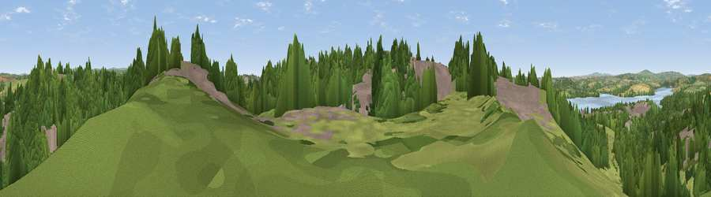

Viewpoint near Saltash
#20595 in England · top 40% of its area beats it · near Saltash · access?Where it is
The exact computed spot (SX 45375 59275). Click the marker for map links.
Public access: no public right of way or access land is recorded at this exact spot — it may be on private land. Computed from Natural England's CRoW access layer and OpenStreetMap rights of way — not the legal definitive map. Always verify locally.
The view, rendered

A 360° render of this exact spot computed from the terrain model, tree cover and land cover — summer colours, afternoon light, calibrated against photographs of famous viewpoints. Real trees, hedges and buildings will differ in detail.
The panorama
Grey silhouette: terrain skyline in each direction (720 bearings, Earth curvature and refraction included). Dashed green: skyline with trees (+15 m) and buildings (+8 m) as obstacles. Blue strip: how far the ground is visible on each bearing.
Where the view opens
Wedge length = distance to the farthest visible ground on that bearing (vegetation-aware). Rings at 10, 25 and 50 km.
What fills the view
49% woodland · 22% grassland · 22% built-up · 5% water · 3% cropland
Angular shares of the visible panorama (visual magnitude), not map area. Landscape diversity 0.55 (0–1 Shannon).
Key numbers
More beautiful places nearby
The staircase of upgrades: each row has a higher view potential than everything closer. Driving times are estimates from straight-line distance, calibrated against real road routing — check an actual route before setting out.
| Place | Direction | Drive | Score |
|---|---|---|---|
| Viewpoint near Saltash | NNE · 0 km | ~1 min | 54.5 |
| Viewpoint near Saltash | WSW · 1 km | ~2 min | 56.5 |
| Tor Hill | NNE · 2 km | ~5 min | 58.6 |
| Viewpoint near Botus Fleming | WNW · 4 km | ~9 min | 58.9 |
| Viewpoint near Roborough | NE · 4 km | ~10 min | 61.7 |
| Cumble Tor | W · 6 km | ~13 min | 64.5 |
| Viewpoint near St Mellion | NW · 8 km | ~15 min | 67.3 |
| Viewpoint near Landrake | W · 8 km | ~16 min | 69.4 |
50.41294, -4.17763 · source: screening · position refined by local search. Computed location — check access rights before visiting.